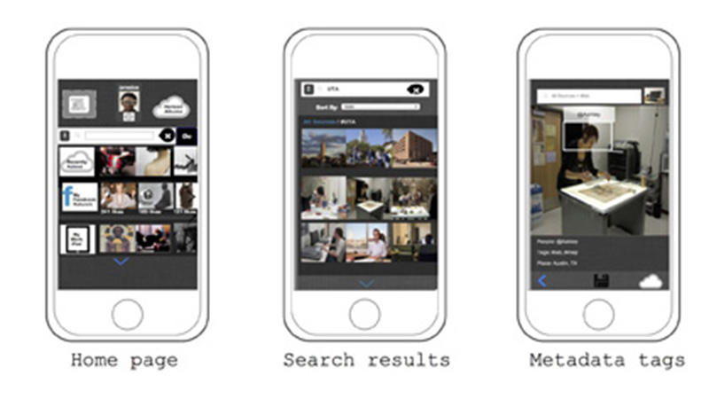
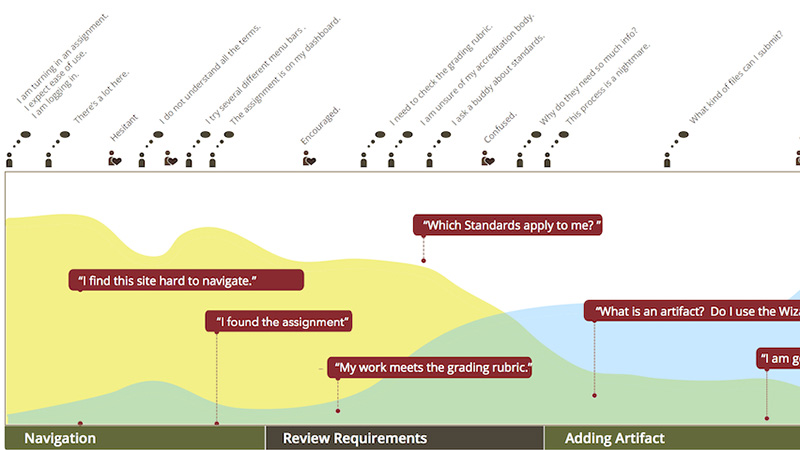
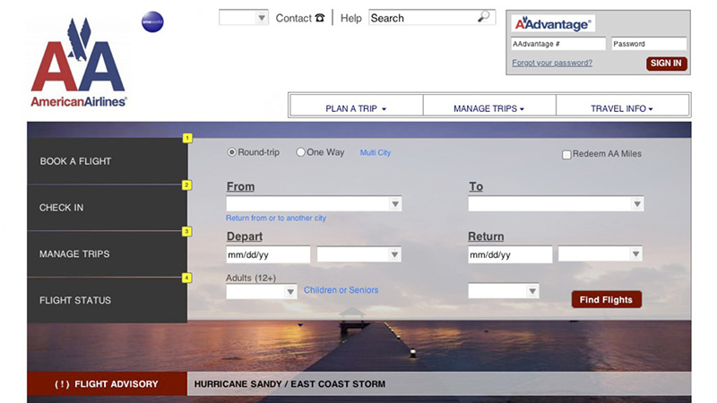

Horizon Image Search Engine
Designed a prototype for a mobile-based image search engine that aggregates images from all the users' social media accounts and mobile devices to a single cloud storage space--enabling the user to access all their images from any location. The design focuses on both browsing and search behavior using tags and content streams as search filters. Developed to be fully interactive in Axure Horizon was usability tested with Morae to strong results.

Journey Map
As a summer intern at technology firm TK20, I oversaw the user testing and re-design of aspects of the Learning Management System for undergraduate Education student. After conducting usability tests on existing software with clients, I developed a journey map to indicate problem points in the current system. The resulting redesign suggestions were included in the final shipped product.

Airline Website Re-design
A team project in Information Architecture was to redesign a commercial website homepage. We improved the American Airlines site by centering the design on the flight information and reservation functions.


{kind=link}